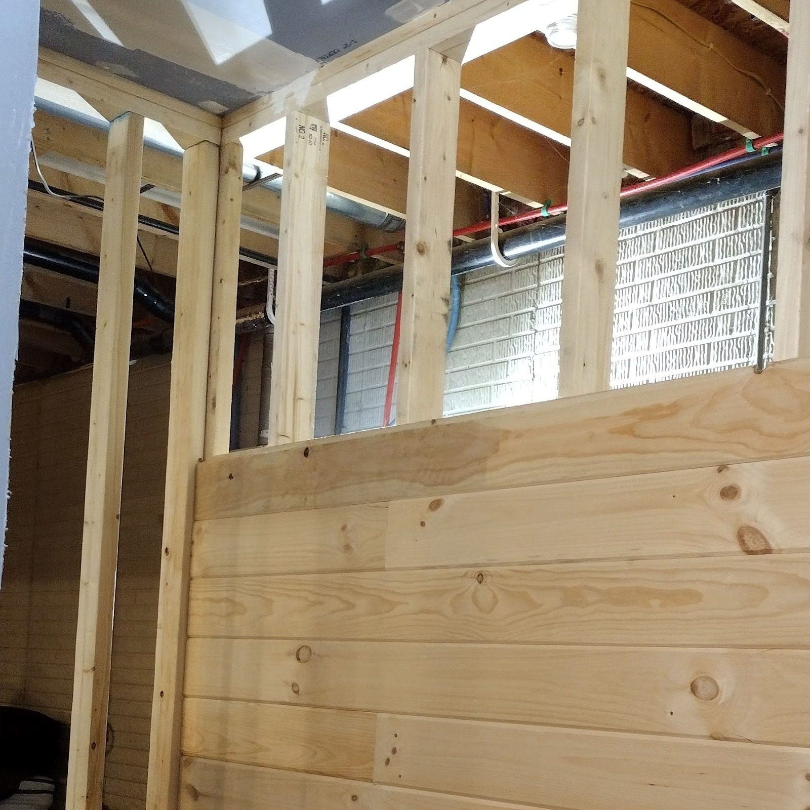
Carpentry · Stairs · Decks — Byesville, OH
Square, level and built.
Framing, stairs, decks, pine walls and finished basements for Byesville and around Cambridge.
4.6 stars on Google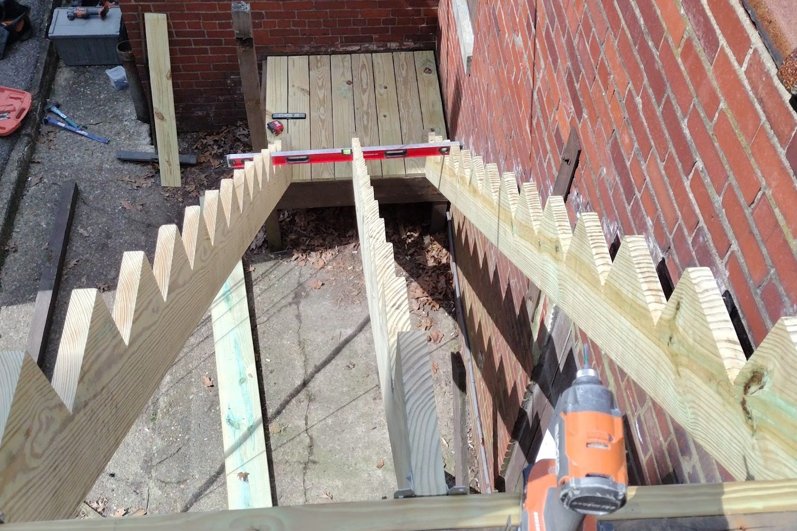
Stage 01 Framing
Studs first. Everything hangs on them.
Plates, studs, headers and stringers: the lines that every wall, stair and deck is built from. Get that part straight and square, and everything after it sits right.
- Walls, plates and headers
- Stair and deck framing
- Pine boards over studs
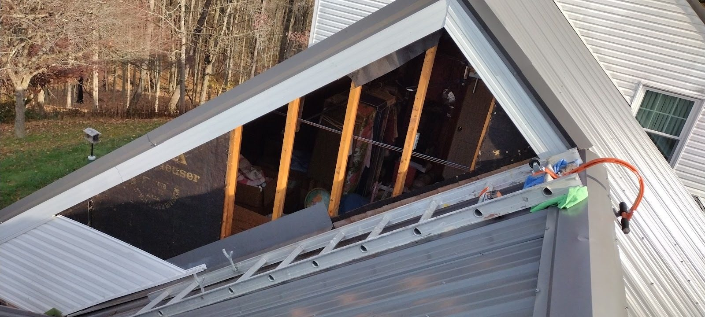
Stage 02 Stairs
Then the stairs go in.
Rise, run and a handrail: a staircase is worked out step by step before a tread is fixed. Here, a flight of outdoor stairs against a brick wall, with its new treads and rail.
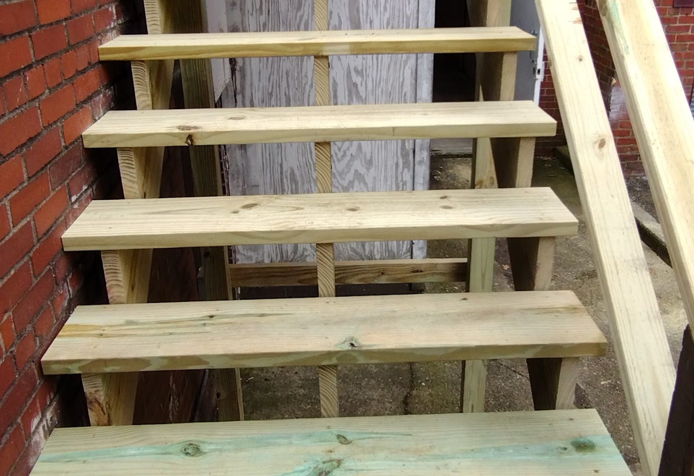
Stage 03 Finishes
Then the rooms you walk into.
Pine walls, a finished basement room and a porch with a fresh railing: the boards, the lines and the light.
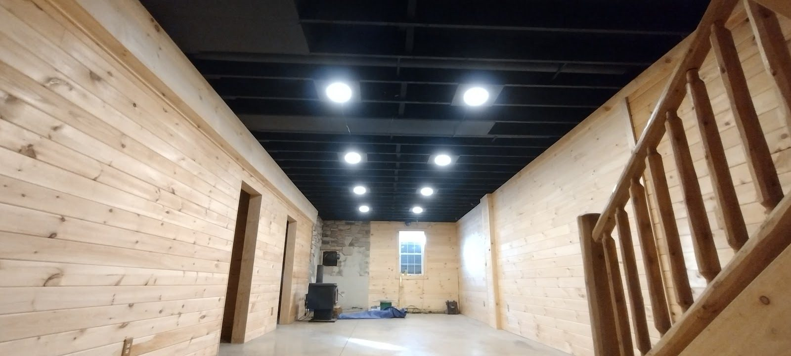
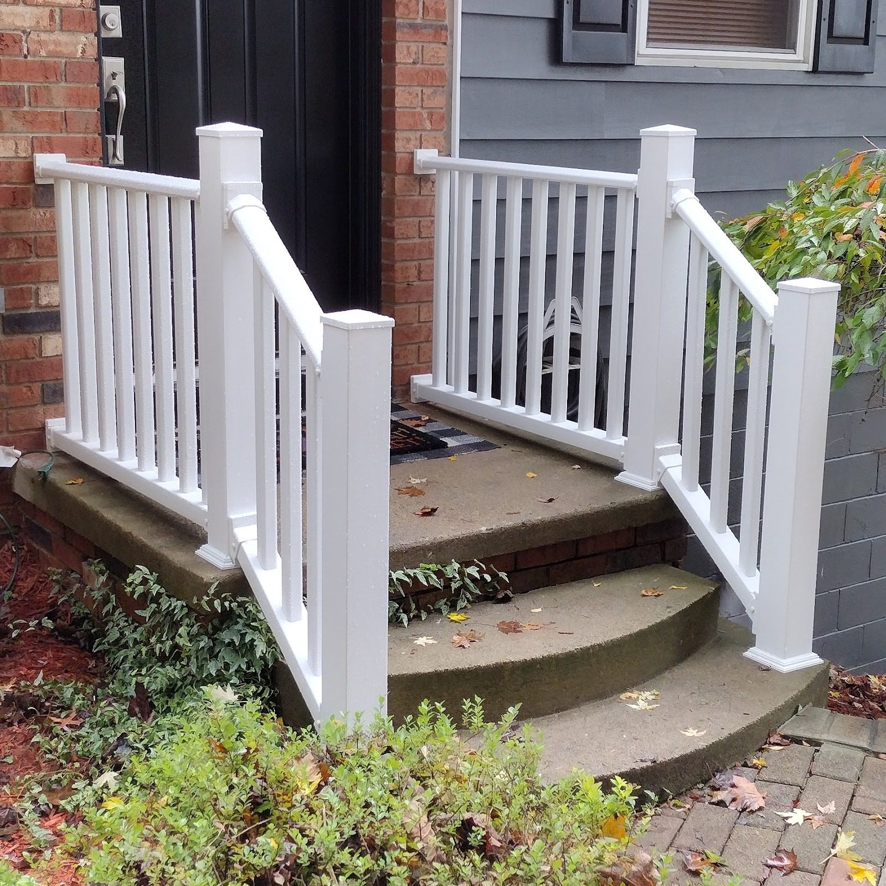
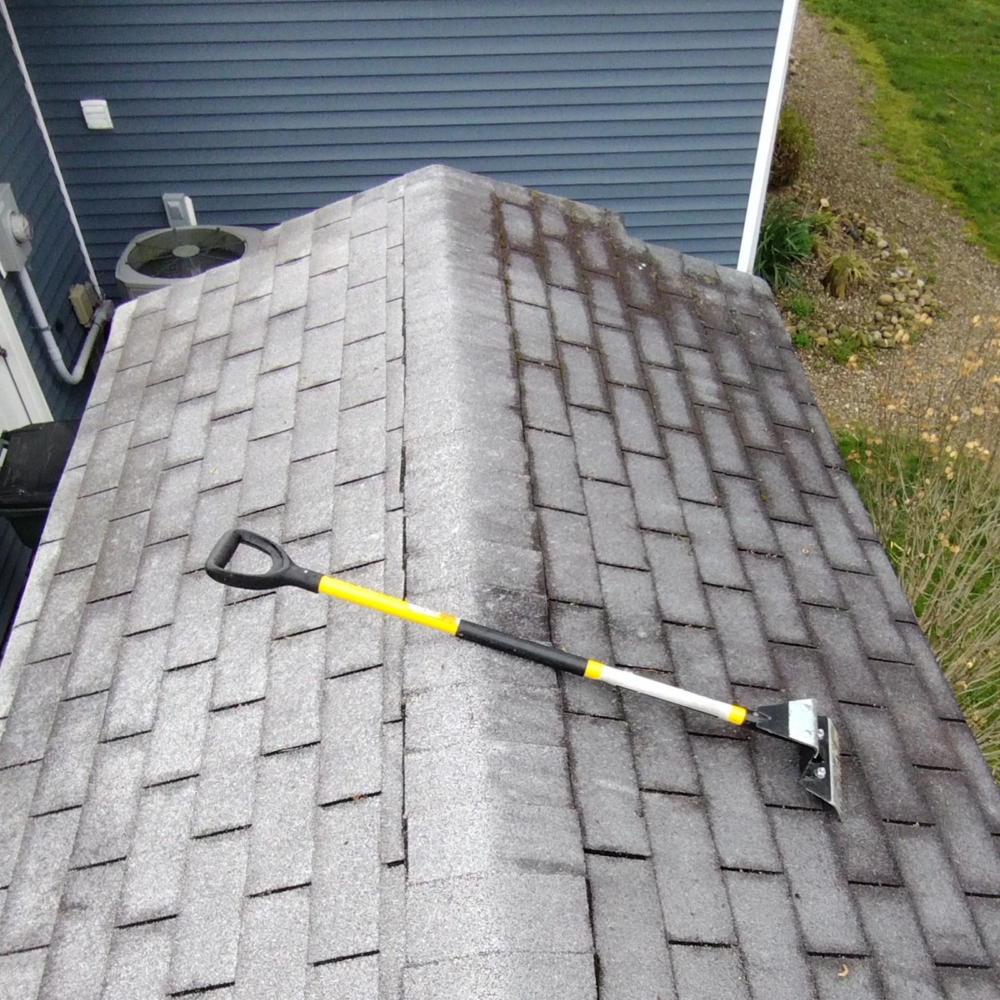
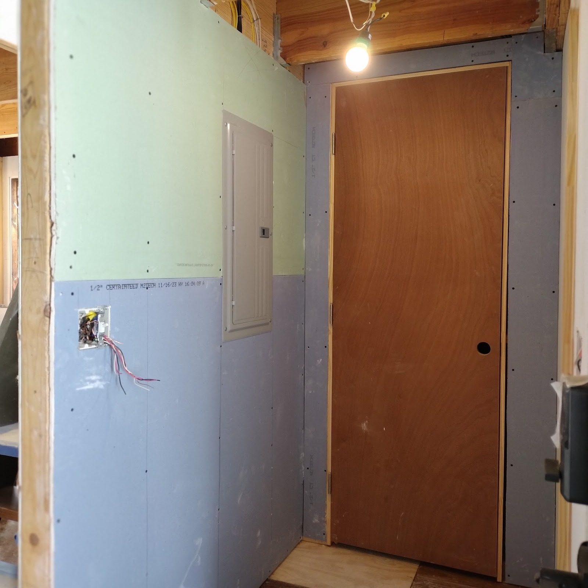
Measure twice. Cut once.
The carpenter’s rule
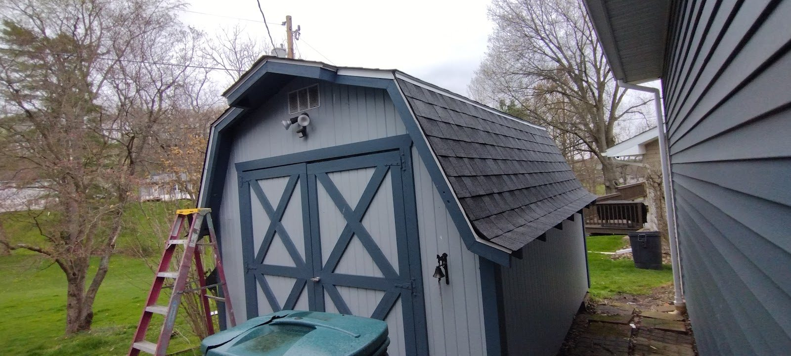
Stage 04 The shed
A shed, start to roof.
A shed with painted double doors and a shingle roof: the framing, the roofing and the trim in one small build.
Stage 05 Services
Pick a job. Or the whole list.
Swipe the five jobs
-
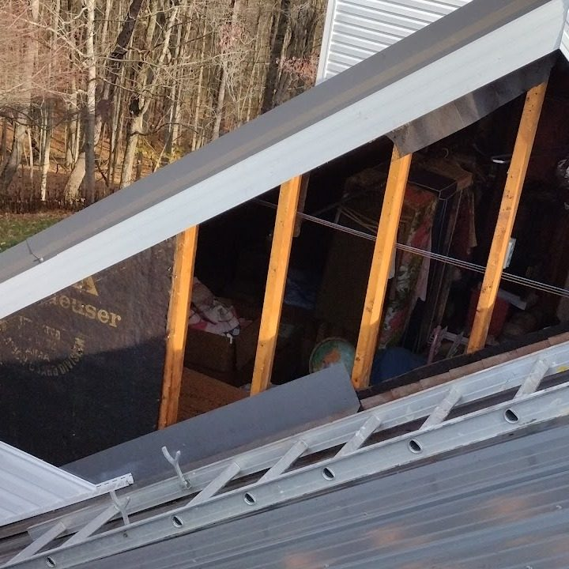
01Framing
Walls, plates and studs: the wooden skeleton that everything else is fixed to.
Ask about framing -
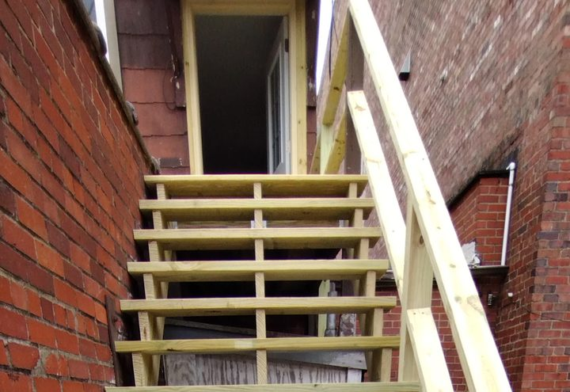
02Stairs and railings
Outdoor stairs with treads, stringers and rails, built to the height of your door.
Ask about stairs -
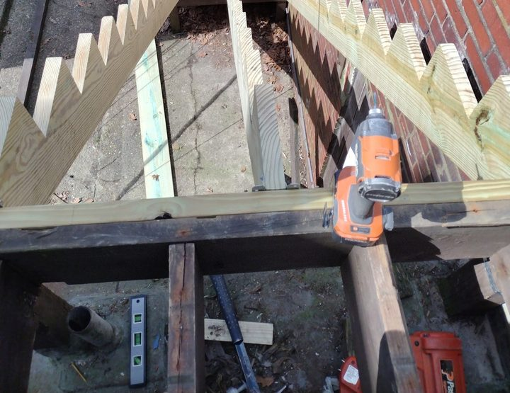
03Decks
Deck framing: joists, beams and posts, laid out before a single board goes down.
Ask about a deck -
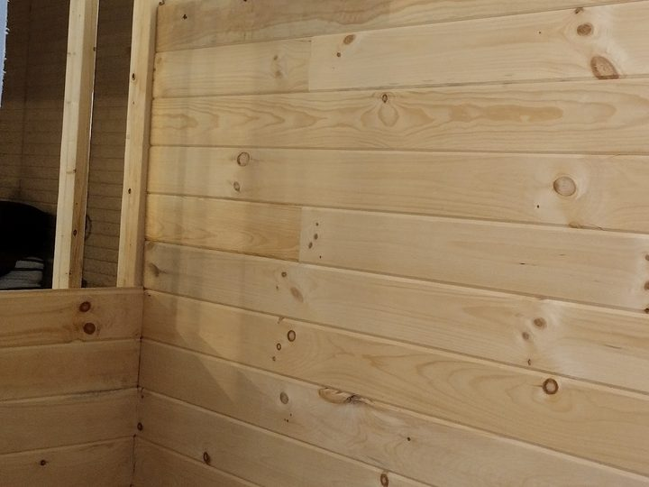
04Pine walls and basements
Tongue-and-groove pine on walls, and basement rooms finished from bare joists to floor.
Ask about a basement -
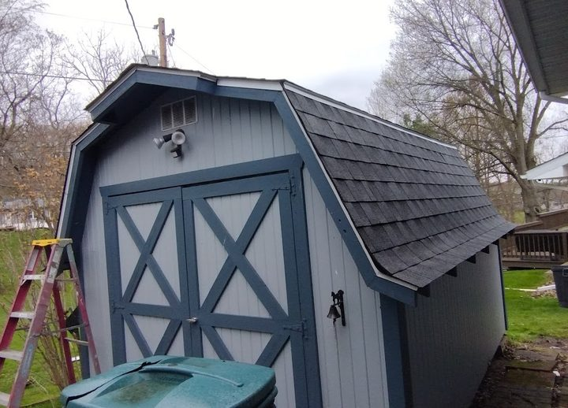
05Sheds and porches
Sheds with shingle roofs, and porches with new railings and steps.
Ask about a shed or porch
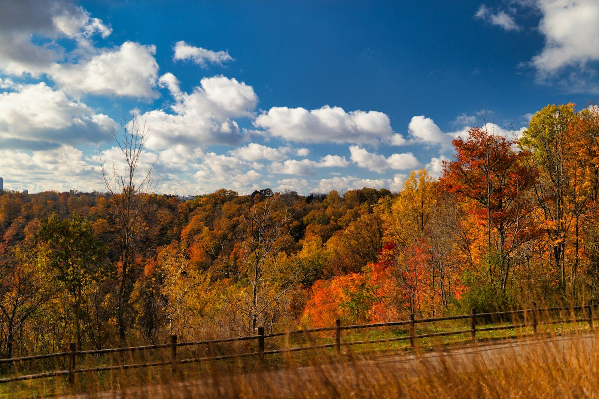
Working in Byesville
Based in Byesville, OH 43723, working around Cambridge in Guernsey County. If your project is nearby, call or text and ask.
(740) 516-9696Autumn hills and a fence line. Illustrative stock photo.
Stage 06 Your project
Send us the measurements.
Photos and rough sizes are a good start.
- Call(740) 516-9696
- Text photos(740) 516-9696
- WhatsApp(740) 516-9696
- Emailgaimprovements23@gmail.com
- AreaByesville, OH 43723, around Cambridge
- FacebookG&A Home Improvements
Notes Before you call
Notes on the drawing.
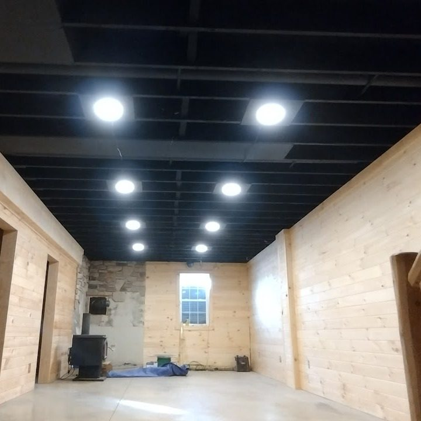
N.1How do I measure for a set of outdoor stairs?
Measure the total rise: from the ground or landing straight up to the top of the door threshold. Then note how much open ground there is for the run. A photo from the side with a tape measure in it tells us a lot.
N.2What should I look at on a deck or stairs each spring?
Look for loose or cupped boards, nails or screws backing out, soft or dark spots in the wood, and any rail or post that moves when you push it. If a rail is loose, stay off it and call.
N.3What should I send?
Photos and rough measurements. For stairs, the height from the ground to the door and a photo from the side. For a basement or room, the length of each wall and a photo from the doorway.
N.4Where are you based?
Byesville, Ohio 43723, working around Cambridge. Say which town you are in when you get in touch.
Deck and stairs: a spring look-over
Tick what you see. General advice only: if a rail moves, stay off it and call or text.
Nothing ticked yet.